Sistemas Físicos Hipermedia
Los valores de las resistencias están pensados para 4 pilas AA en serie (aprox. 6 V). No pasar de 6 V: no usar la pila de 9 V ni más pilas. El chip L293D se daña si su pata 16 recibe más de 7 V, y los LED reciben más corriente de la que aguantan.
| Cant. | Pieza | Valor |
|---|---|---|
| BASE | ||
| 1 | Protoboard | |
| 1 | Portapilas de 4 pilas AA, con sus 4 pilas AA | aprox. 6 V |
| 1 | Interruptor deslizante (3 patas) | |
| var. | Cables de varios colores (rojo y negro para el positivo y el negativo) | |
| 1 | Multímetro (se pueden usar los del laboratorio Caldas) | |
| SENSORES (todo esto va dos veces: izquierdo y derecho) | ||
| 2 | LED infrarrojo emisor (transparente) | |
| 2 | Receptor infrarrojo (oscuro) | |
| 2 | LED rojo | |
| 2 | R1, resistencia | 220 Ω |
| 4 | R2 y R3, resistencias (2 de cada una) | 1 kΩ |
| 2 | R4, resistencia | 10 kΩ |
| 2 | Transistor 2N2222A (uno por sensor; se retira al pasar al LM358) | |
| var. | Termoencogible negro grueso o cinta aislante negra (barreras entre emisor y receptor) Nota: si en cualquier momento quieren cambiar resistencias por más potenciómetros o más trimmers, lo pueden hacer. De hecho es mejor, para ir probando los valores que más les funcionen. | |
| MOTORES | ||
| 1 | L293D (chip de 16 patas) | |
| 2 | Motores con rueda | 3 a 6 V |
| EL CAMBIO AL LM358 | ||
| 1 | LM358 (chip de 8 patas) | |
| 2 | Potenciómetro o trimmer | 10 kΩ |
| 2 | R5, resistencia | 47 kΩ (sirve 51 kΩ) |
| CONDENSADORES | ||
| 1 | C1, electrolítico | 470 µF, 16 V o más |
| 4 | C2, C3, C4, C5, cerámicos (marcados 104) | 100 nF |
Paso 1
Lo que se logra: tener 6 V entre el positivo y el negativo de la protoboard, con un interruptor para apagar todo.
Todo el trabajo posterior depende de que el positivo y el negativo estén bien. Revisar que:
Si recuerdan, yo tenía unos cablecitos uniendo todo el positivo y todo el negativo de mi protoboard. Pero la tuneé: la desarmé por abajo y les soldé los cables directamente. Por eso no ven esos cables arriba, pero siguen existiendo por debajo.
Encender el interruptor. Con el multímetro en voltios DC, la punta roja en el positivo (la fila roja) y la punta negra en el negativo (la fila azul). Debe marcar entre 5,6 y 6,4 V. Probar en varios puntos de cada fila, de un extremo al otro.
Paso 2
Lo que se logra: que el LED infrarrojo emita luz que se pueda ver con la cámara de un celular.
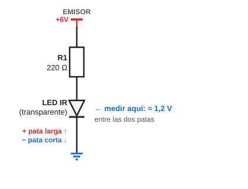
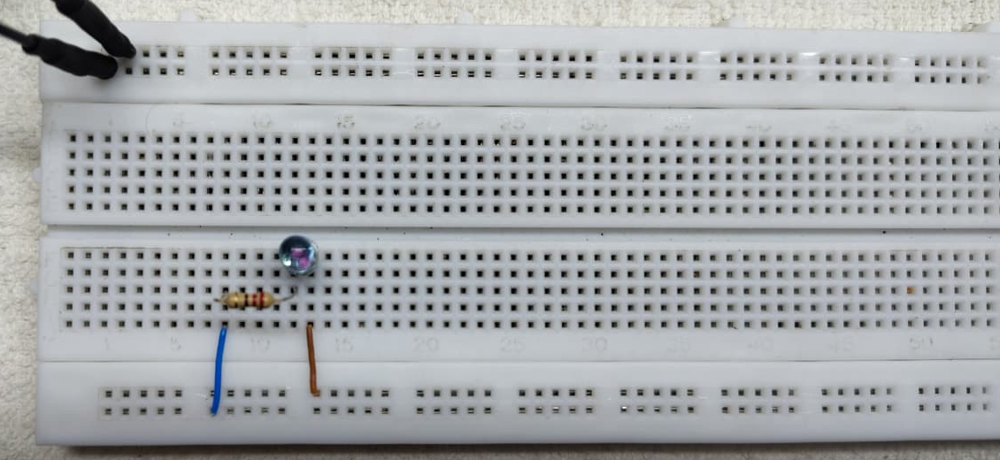
Con la pila conectada, medir con el multímetro (voltios DC) entre las dos patas del LED infrarrojo: debe marcar cerca de 1,2 V. Además, apuntar la cámara del celular al LED: se ve una luz morada. El ojo no la ve, pero la cámara sí.
Paso 3
Lo que se logra: que el receptor infrarrojo detecte la luz del emisor reflejada en un obstáculo, y que ese cambio se pueda medir como un voltaje.
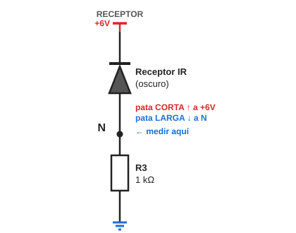
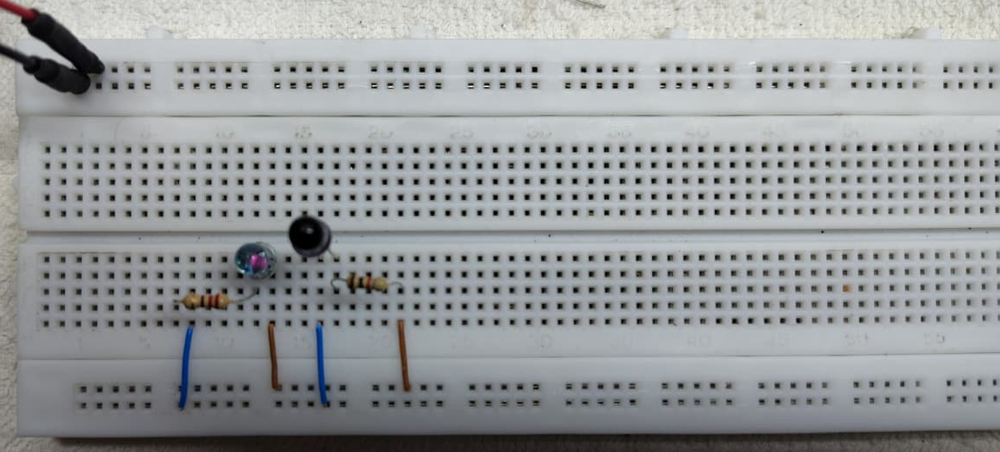
Barrera (entre el emisor y el receptor, para que el receptor no vea el LED directo): termoencogible negro grueso, o dos vueltas de cinta aislante negra, o espuma o cartón negro grueso. No todo lo negro tapa el infrarrojo: las bolsas y plásticos negros delgados lo dejan pasar.
Obstáculo de prueba: cartón blanco o una hoja blanca doblada, opaca y mate. Lo claro y opaco refleja bien el infrarrojo; lo negro lo absorbe, y lo transparente o brillante (vidrio, acrílico, espejo) casi no funciona.
1. Con la pila desconectada, multímetro en ohmios: la punta negra en el negativo y la punta roja en la pata larga del receptor. Debe marcar cerca de 1 kΩ (por ejemplo, 993 Ω).
2. Con la pila conectada, multímetro en voltios DC y la punta negra en el negativo:
Paso 4
Lo que se logra: armar la parte de salida del sensor: un LED rojo que, por ahora, queda apagado, y un punto S donde el voltaje es alto.
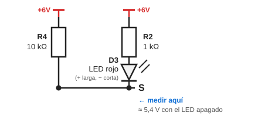
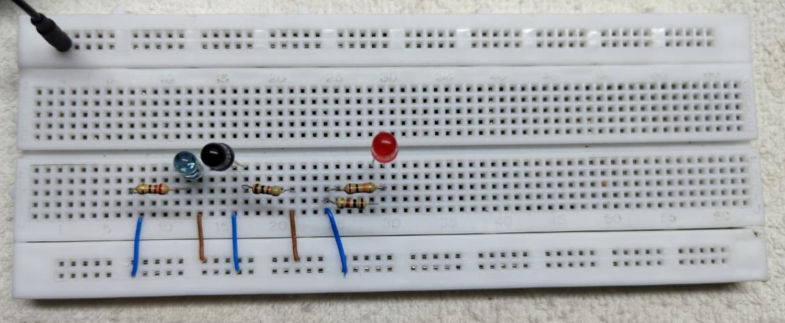
1. Con la pila conectada, la punta negra en el negativo y la punta roja en la fila S (la pata corta del LED): debe marcar cerca de 5,4 V. El LED rojo debe estar apagado.
2. Con un cable, unir la fila S con el negativo. El LED rojo debe prender. Al quitar el cable, se apaga.
Paso 5
Lo que se logra: poner el transistor que enciende el LED rojo cuando se le da una pequeña corriente en la base, y comprobar que responde.
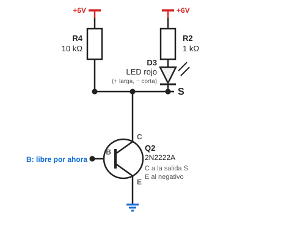
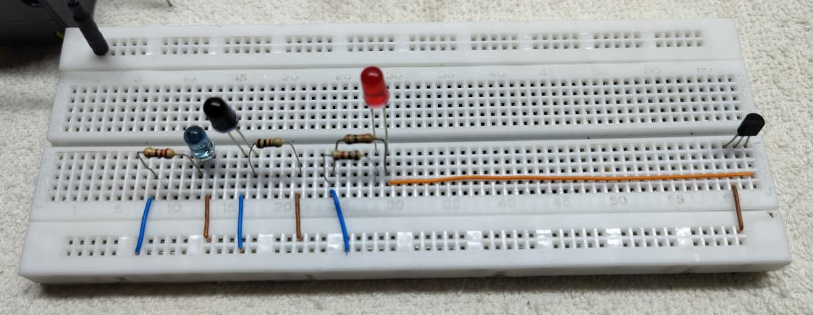
Muchos 2N2222A traen las patas en el orden E, B, C mirando la cara plana. Algunos vienen al revés (C, B, E). Si la prueba de abajo no funciona, girar el transistor 180°, cambiar los dos cables de lugar (el que iba a E ahora va a la pata de ese lado) y repetir la prueba.
1. Con la pila conectada, el LED rojo debe seguir apagado y S debe seguir cerca de 5,4 V.
2. Tocar la pata del centro (B) con una resistencia de 1 kΩ cuyo otro extremo va al positivo. El LED rojo debe prender. Al quitar la resistencia, se apaga.
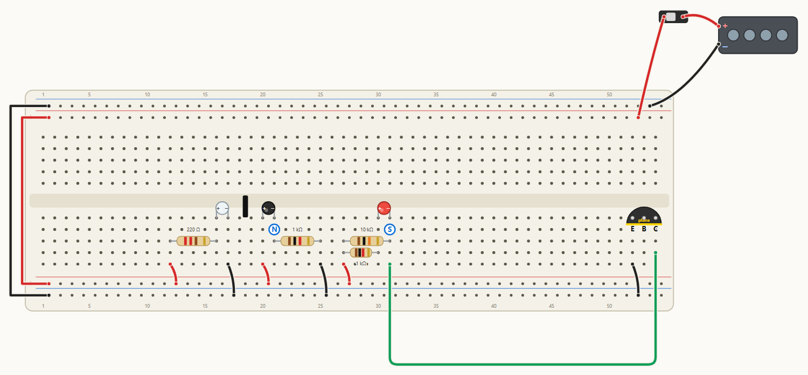
Paso 6
Lo que se logra: completar el sensor: que el LED rojo prenda cuando se acerca una mano o un cartón, y se apague al alejarlos.
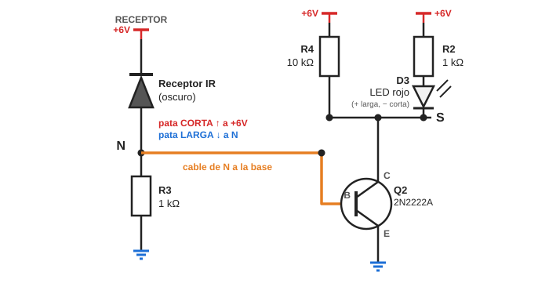
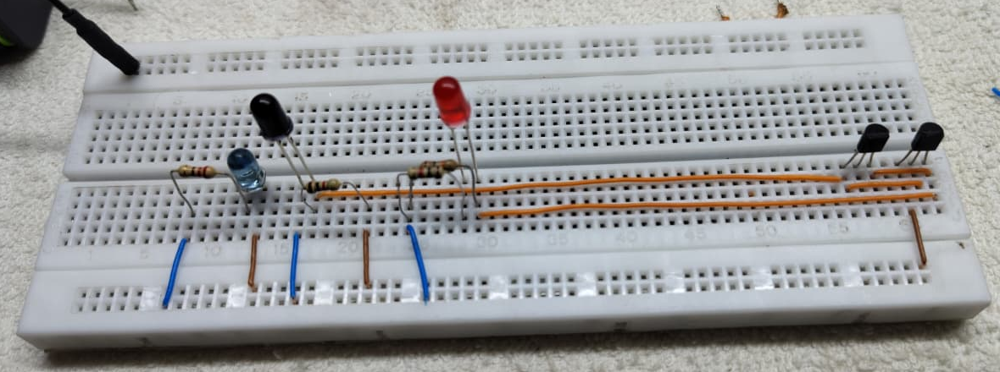
En mis fotos y en mi video van a ver dos transistores por sensor: yo lo venía armando con dos. Pero por estar midiendo mal y conectando mal cosas, la cagué y maté un transistor. Y como no tenía otro, me tocó seguir con uno solo, que es el que muestra esta guía. Guíense por el esquema: un transistor (Q2), con el cable de N llegando a su base.
1. Con la pila conectada y sin nada enfrente, el LED rojo debe estar apagado.
2. Acercar la mano o un cartón blanco frente al emisor y al receptor: el LED rojo debe prender. Al alejarlos, se apaga. Medir a qué distancia empieza a prender (con este montaje suele ser de unos 5 a 10 cm).
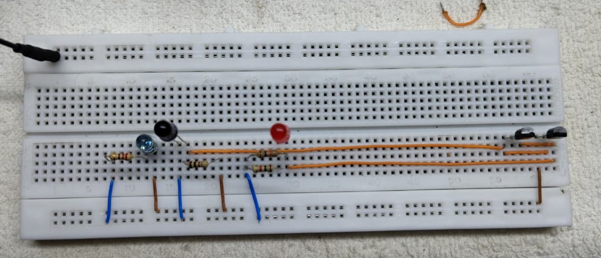
El sensor funcionando: el LED rojo prende al acercar la mano y se apaga al alejarla.
Ver el video del paso 6 (en OneDrive).
Paso 7
Lo que se logra: dejar puesto y alimentado el chip que mueve los motores, todavía sin motores.
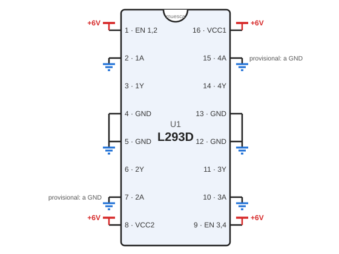
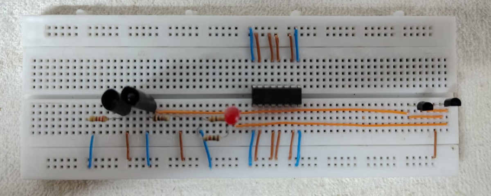
Poner el chip a caballo del canal central de la protoboard. La muesca marca el lado de la pata 1. Las patas se cuentan en forma de U: bajando por un lado (1 a 8) y subiendo por el otro (9 a 16).
| Pata | Nombre | Va a | Pata | Nombre | Va a |
|---|---|---|---|---|---|
| 1 | EN 1,2 | +6V | 16 | VCC1 | +6V |
| 2 | 1A | GND | 15 | 4A | GND (por ahora) |
| 3 | 1Y | libre | 14 | 4Y | libre |
| 4 | GND | GND | 13 | GND | GND |
| 5 | GND | GND | 12 | GND | GND |
| 6 | 2Y | libre | 11 | 3Y | libre |
| 7 | 2A | GND (por ahora) | 10 | 3A | GND |
| 8 | VCC2 | +6V | 9 | EN 3,4 | +6V |
Con la pila conectada, medir en la pata 16 contra el negativo: unos 5,4 a 6 V. Medir también la pata 8, la pata 1 y la pata 9: el mismo valor. El chip no debe calentarse: tocarlo con cuidado unos segundos.
Paso 8
Lo que se logra: que el motor 1 gire mientras el camino está libre y se frene cuando se pone la mano frente al sensor.
En mi protoboard usé tres colores de cable: azul para el positivo, café para el negativo y anaranjado para las conexiones entre componentes. También pueden guiarse un poco por eso en mis fotos. (En los dibujos, el positivo va en rojo y el negativo en negro.)
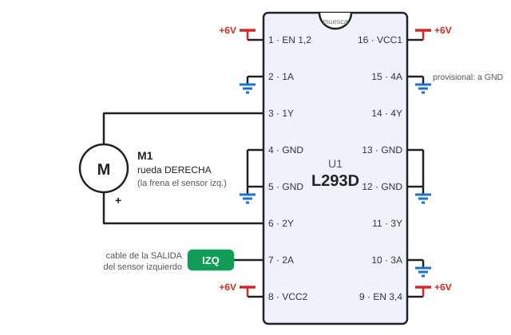
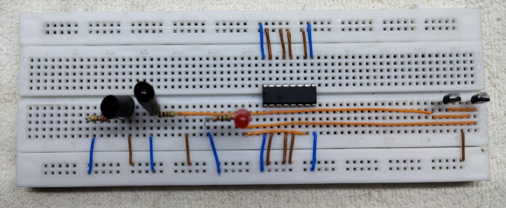
| Qué | Va a |
|---|---|
| Un cable del motor 1 | pata 3 (1Y) del L293D |
| El otro cable del motor 1 | pata 6 (2Y) del L293D |
| Pata 7 (2A) del L293D | quitarla de GND y llevarla a la salida S del sensor izquierdo (el punto donde se unen el colector del transistor, R4 y el LED rojo) |
La pata 2 (1A) sigue a GND. El motor no tiene polaridad: si gira al revés de lo que se quiere, invertir sus dos cables. Este motor 1 será la rueda derecha del carrito.
Sin nada frente al sensor, el motor gira. Al poner la mano frente al sensor, el motor se frena (a la vez que el LED rojo prende). Al retirar la mano, vuelve a girar.
Por qué: el chip hace girar el motor cuando las patas 1A y 2A tienen voltaje distinto. Con el camino libre, 2A está en alto y 1A en tierra. Con la mano, el sensor baja 2A a tierra, las dos quedan iguales y el motor se frena.
El motor 1 girando y deteniéndose al poner y quitar la mano frente al sensor.
Ver el video del paso 8 (en OneDrive).
Paso 9
Lo que se logra: que los dos motores giren y se frenen juntos con el mismo sensor. Es un paso intermedio.
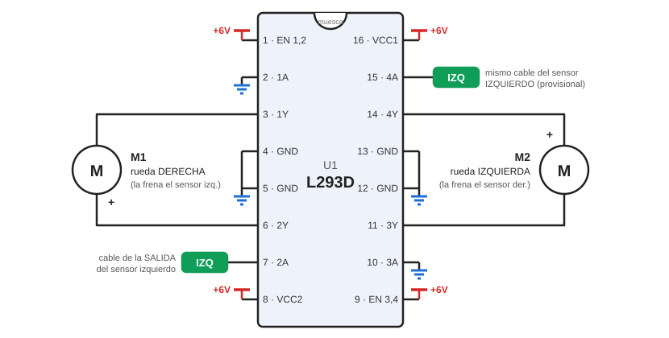
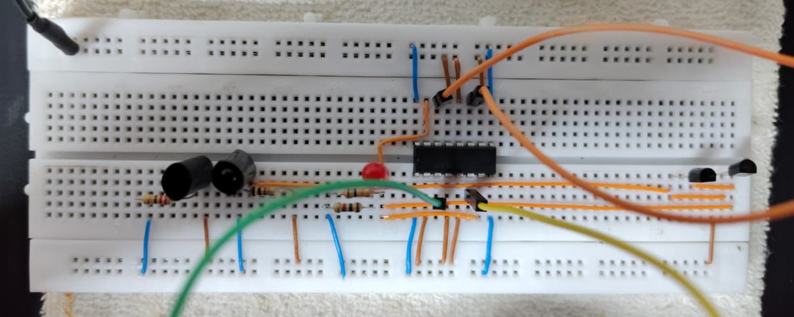
| Qué | Va a |
|---|---|
| Un cable del motor 2 | pata 14 (4Y) del L293D |
| El otro cable del motor 2 | pata 11 (3Y) del L293D |
| Pata 15 (4A) del L293D | quitarla de GND y llevarla al mismo cable de la salida S del sensor izquierdo (provisional: más adelante irá al sensor derecho) |
La pata 10 (3A) sigue a GND. Este motor 2 será la rueda izquierda del carrito.
Sin obstáculo, los dos motores giran. Con la mano frente al sensor, los dos se frenan.
Los dos motores girando y frenándose juntos al poner y quitar la mano.
Ver el video del paso 9 (en OneDrive).
Paso 10
Lo que se logra: empezar el segundo sensor, que es igual al izquierdo, armado en el otro lado del canal central de la protoboard (como un espejo), con su propio positivo y negativo.
El positivo y el negativo de este lado deben estar unidos con los del otro lado (un cable rojo con rojo y uno negro con negro), como se revisó en el paso 1.
Entre las dos patas del LED infrarrojo debe haber cerca de 1,2 V, y la cámara del celular debe mostrar una luz morada, como en el paso 2.
Paso 11
Lo que se logra: que el receptor del sensor derecho detecte la luz reflejada, igual que el izquierdo.
Con la pila desconectada, en ohmios, entre el negativo y la pata larga del receptor: cerca de 1 kΩ. Con la pila conectada, la pata larga marca menos de 0,5 V sin nada enfrente y sube con un cartón blanco a 2 o 3 cm.
Paso 12
Lo que se logra: la parte de salida del sensor derecho, con su punto S.
Con la pila conectada, S marca cerca de 5,4 V y el LED está apagado. Al unir S con el negativo con un cable, el LED prende.
Paso 13
Lo que se logra: poner el transistor del sensor derecho y comprobar que responde.
El LED sigue apagado. Al tocar la pata del centro (B) con una resistencia de 1 kΩ cuyo otro extremo va al positivo, el LED prende. Al quitarla, se apaga.
Paso 14
Lo que se logra: completar el sensor derecho: su LED rojo prende al acercar la mano y se apaga al alejarla.
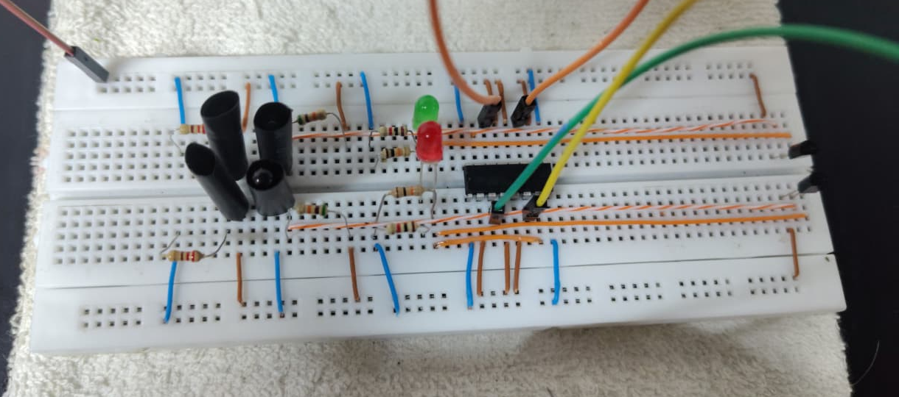
Sin nada enfrente, el LED rojo derecho está apagado. Al acercar la mano o un cartón, prende; al alejarlos, se apaga. Probarlo solo, sin tapar el sensor izquierdo.
Paso 15
Lo que se logra: un carrito que esquiva: cada sensor frena la rueda del lado contrario.
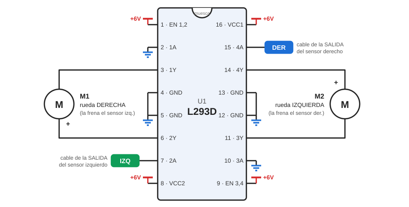
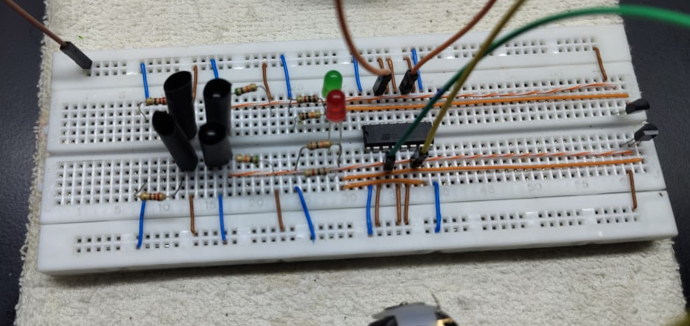
Quitar de la pata 15 el cable que venía de la salida S del sensor izquierdo, y llevarlo a la salida S del sensor derecho.
| Pata del L293D | Recibe | Mueve |
|---|---|---|
| 7 (2A) | salida del sensor izquierdo | motor 1 = rueda derecha |
| 15 (4A) | salida del sensor derecho | motor 2 = rueda izquierda |
| Qué se pone enfrente | Qué debe pasar |
|---|---|
| Nada | los dos motores giran |
| La mano frente al sensor izquierdo | se frena el motor 1 (rueda derecha): el carrito gira a la derecha |
| La mano frente al sensor derecho | se frena el motor 2 (rueda izquierda): el carrito gira a la izquierda |
| La mano frente a los dos | los dos motores se frenan |
Es buen momento para montar los motores en el chasis: motor 1 a la derecha y motor 2 a la izquierda (mirando hacia donde avanza). Sensores adelante, apuntando un poco hacia afuera, y con una barrera opaca entre el izquierdo y el derecho.
Los cuatro casos de la tabla: nada, mano a la izquierda, mano a la derecha y mano a los dos.
Ver el video del paso 15 (en OneDrive).
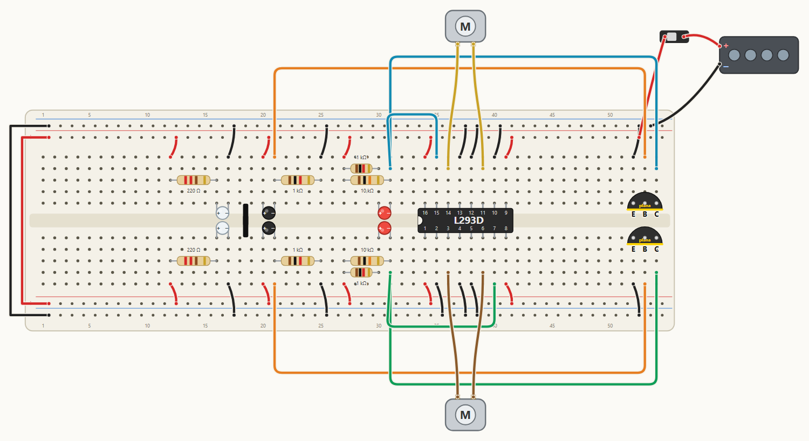
Como ya les dije, en mis fotos ven dos transistores porque yo lo venía armando con dos: funciona mejor, tiene un poquito más de rango. Pero se me murió uno, y no tenía más, así que me tocó pasarlo a uno solo. Si ustedes quieren seguir con dos, abajo les muestro cómo queda la conexión.
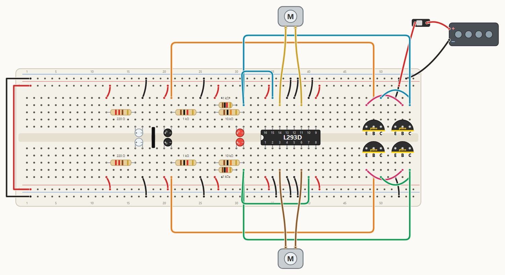
Con dos transistores, el cable del receptor (punto N) llega a la base del primero, el emisor del primero se une a la base del segundo y los colectores de los dos se unen en la salida S.
Paso 16
Lo que se logra: poner el chip que va a decidir cuándo hay un obstáculo (el LM358) y alimentarlo. A partir de aquí el sensor ya no necesita transistores: se retiran en el paso 18.
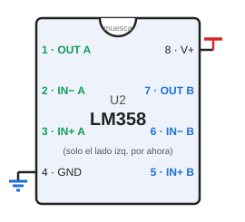
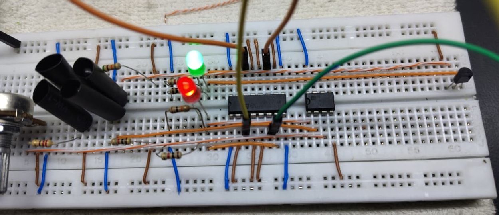
Con la pila conectada y la punta negra en el negativo: la pata 8 marca 5,4 a 6 V y la pata 4 marca 0 V.
Paso 17
Lo que se logra: fabricar un voltaje ajustable (el umbral) que decide qué tan cerca tiene que estar un obstáculo para que el sensor reaccione.
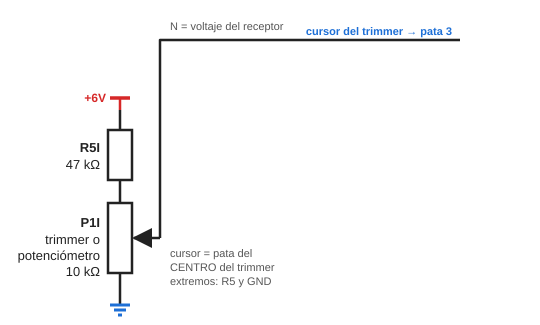
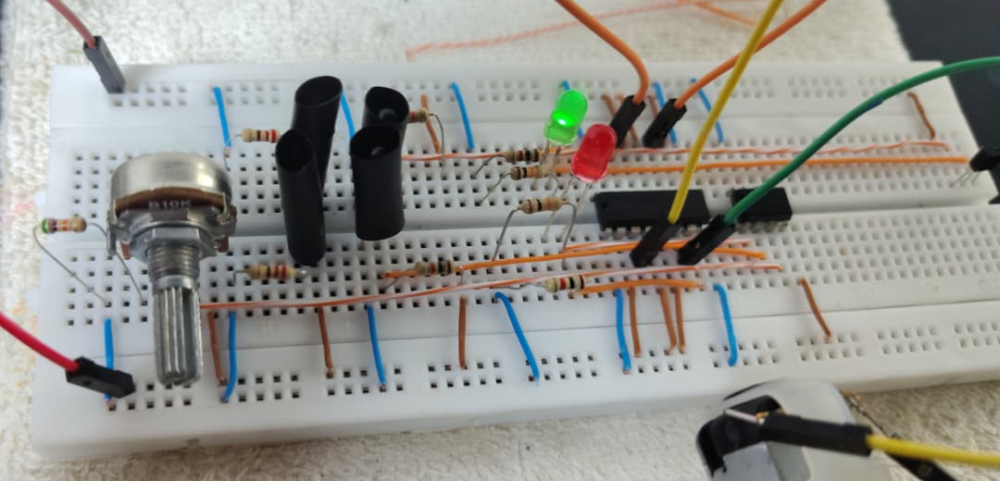
Con la pila conectada y la punta negra en el negativo, medir en la pata 3 del LM358 mientras se gira el potenciómetro de un extremo al otro: el voltaje cambia de casi 0 V a unos 0,8 V.
También me tiré con los trimmers: compré unos muy pequeños, de 1 kΩ, y no servían, así que usé potenciómetros de 10 kΩ. Con un trimmer de 10 kΩ queda mucho más bonito (y más chiquito), y funciona igual.
Paso 18
Lo que se logra: que el LM358 reemplace al transistor en el sensor izquierdo: el LED rojo prende solo cuando el obstáculo pasa del umbral que se fijó con el potenciómetro.
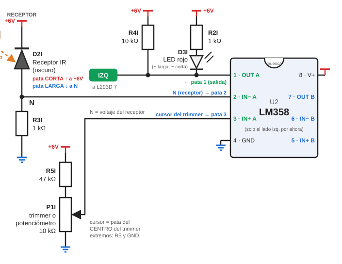
La pata 3 ya está unida al cursor del potenciómetro (paso 17). R3 debe seguir en 1 kΩ.
1. Sin nada enfrente, la pata 2 marca menos de 0,4 V.
2. Girar el potenciómetro hasta que el LED rojo quede apagado sin nada enfrente y prenda al acercar la mano. El motor 1 gira sin obstáculo y se frena con la mano.
El LED prende cuando la pata 2 supera a la pata 3. Subir el umbral (pata 3 más alta) exige más luz reflejada: menos rango pero más estable. Bajarlo da más rango, hasta que el LED se prende solo. El punto justo es el que queda un poco antes de que se prenda solo.
El sensor izquierdo con el LM358: se gira el potenciómetro para ajustar el rango y el LED rojo prende al acercar la mano.
Ver el video del paso 18 (en OneDrive).
Paso 19
Lo que se logra: el mismo voltaje ajustable del paso 17, ahora para el sensor derecho, usando la otra mitad del LM358.
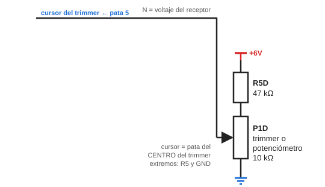
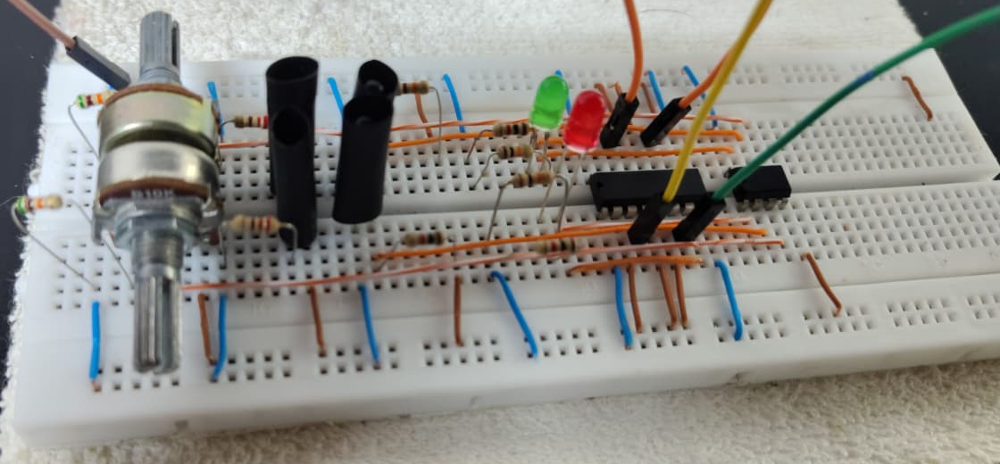
El LM358 tiene dos comparadores: el lado izquierdo usa las patas 1, 2 y 3; el derecho usa las patas 5, 6 y 7.
Medir en la pata 5 mientras se gira el potenciómetro: el voltaje cambia de casi 0 V a unos 0,8 V.
Paso 20
Lo que se logra: que los dos sensores usen el LM358 y el carrito ya sea ajustable de los dos lados.
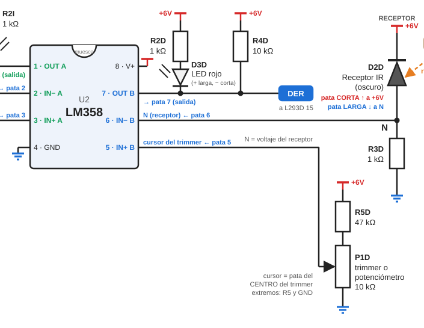
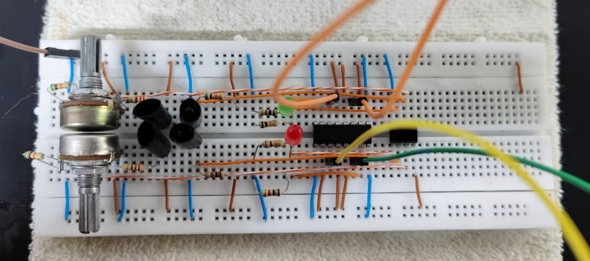
Girar el segundo potenciómetro hasta que el LED rojo derecho quede apagado sin nada enfrente y prenda con la mano. Repetir los cuatro casos del paso 15: nada, mano a la izquierda, mano a la derecha y mano a los dos.
Los dos sensores con el LM358: se ajustan los dos potenciómetros y se repiten los cuatro casos.
Ver el video del paso 20 (en OneDrive).
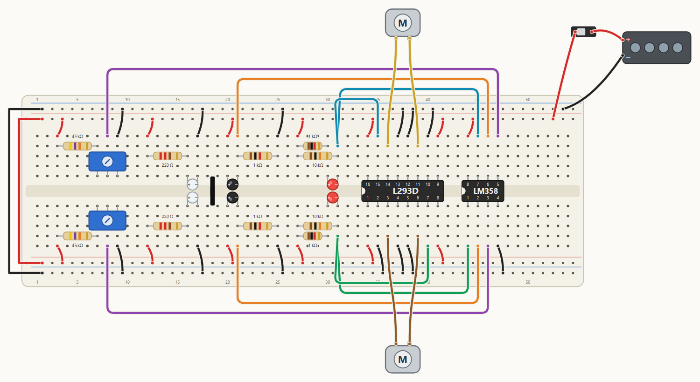
Este esquema es igual si se armó con uno o con dos transistores, porque en este paso se retiran.
Paso 21
Lo que se logra: que la alimentación no tiemble ni se reinicie cuando los motores arrancan. Al arrancar, un motor tira la alimentación hacia abajo y mete ruido; los condensadores guardan un poco de energía y la entregan en picos rápidos.
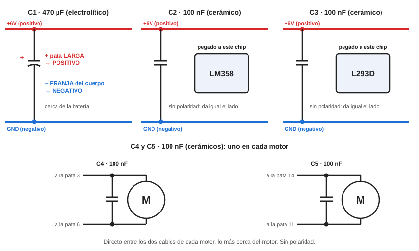
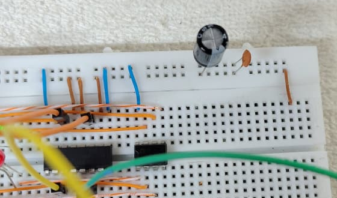
| Condensador | Valor | Entre qué y qué | Polaridad |
|---|---|---|---|
| C1 | 470 µF electrolítico | positivo y negativo, cerca de la batería | pata larga al +, franja al − |
| C2 | 100 nF cerámico | positivo y negativo, pegado al LM358 (cerca de las patas 8 y 4) | no tiene |
| C3 | 100 nF cerámico | positivo y negativo, pegado al L293D (cerca de la pata 16) | no tiene |
El electrolítico sí tiene polaridad. La franja del cuerpo marca la pata negativa y va al negativo. Al revés se calienta y puede explotar. Si se calienta o huele raro, apagar de inmediato.
Con la pila conectada, el voltaje entre el positivo y el negativo sigue en 5,4 a 6 V. Poner y quitar la mano varias veces, de lejos a cerca y rápido: los motores arrancan y paran sin que los LED parpadeen y sin que nada se reinicie.
Paso 22
Lo que se logra: quitarle el ruido a cada motor desde su origen, para que el chip y los sensores no se confundan.
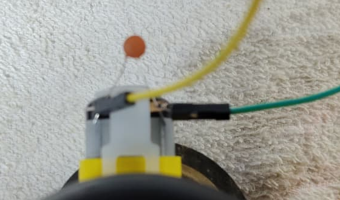
| Condensador | Valor | Entre qué y qué |
|---|---|---|
| C4 | 100 nF cerámico | directo entre los dos terminales del motor 1 (los que van a las patas 3 y 6) |
| C5 | 100 nF cerámico | directo entre los dos terminales del motor 2 (los que van a las patas 14 y 11) |
No tienen polaridad. Lo mejor es soldarlos directo a los dos terminales del motor; si no hay soldadura, enrollar bien las patas del condensador a las del motor.
Poner y quitar la mano rápido frente a cada sensor. Los motores arrancan y paran sin que los LED parpadeen y sin que se reinicie nada.
Extra, solo si todavía "tiembla" justo en el límite de la distancia: agregar R6, una resistencia de 470 kΩ, entre la salida del comparador y su entrada +: pata 1 con pata 3 (lado izquierdo) y pata 7 con pata 5 (lado derecho).
Los motores arrancan y paran sin que los LED parpadeen, con los condensadores puestos.
Ver el video del paso 22 (en OneDrive).
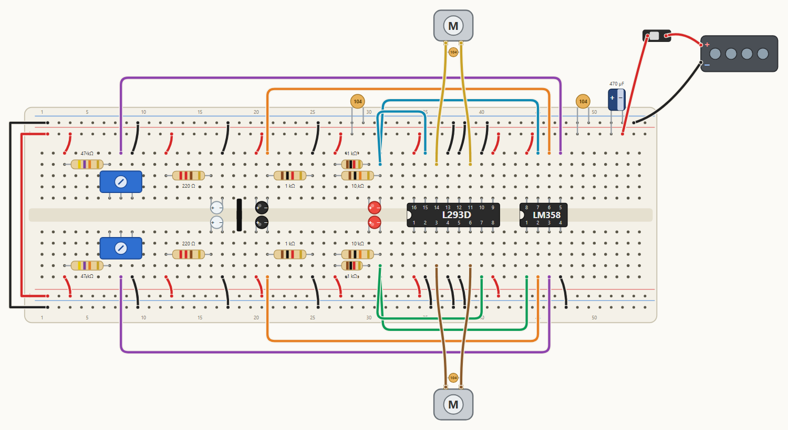
Paso 23 (opcional)
Cuándo hacerlo: solo si los motores no son de 3 a 6 V, o si con 6 V giran muy despacio.
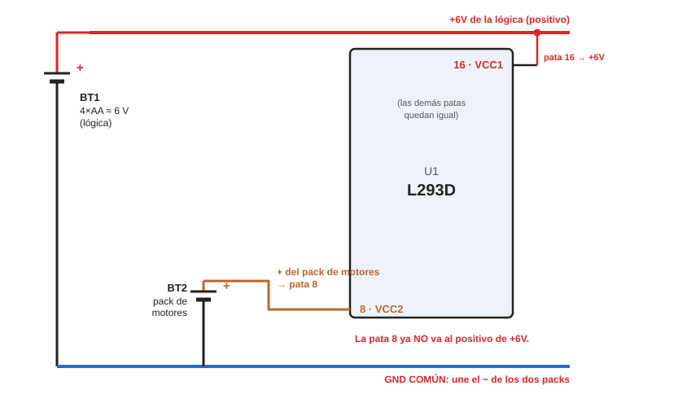
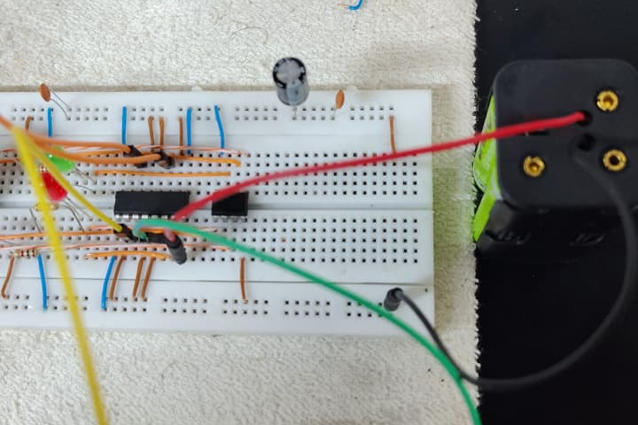
Hasta ahora el pack de 6 V alimenta todo. Aquí los motores pasan a su propio pack, conectado a la pata 8 (VCC2) del L293D. La lógica (pata 16), los sensores y el LM358 siguen en los 6 V.
| Qué | Va a |
|---|---|
| Pata 8 del L293D | quitarla del positivo y llevarla al positivo (+) del pack de motores |
| Negativo (−) del pack de motores | negativo (GND), el mismo de todo el circuito |
| Pata 16 del L293D | sigue en el positivo +6V de la lógica |
El L293D se come unos 2,5 V. Al voltaje del motor se le suman 2,5 V para saber el pack:
| Voltaje del motor | Pack sugerido |
|---|---|
| 5 V | aprox. 7,5 V (5 pilas AA, o 2 celdas 18650 en serie) |
| 6 V | aprox. 8 a 9 V (6 pilas AA) |
| 10 a 12 V | aprox. 12 V (8 pilas AA). El motor recibe unos 9 a 10 V, es normal. |
Medir la pata 16 contra el negativo: 5,4 a 6 V. Medir la pata 8: el voltaje del pack de motores. Los motores giran más fuerte que antes y los sensores siguen funcionando igual.
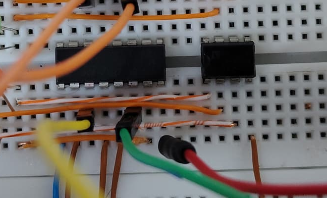
Los dos packs conectados y el carrito andando.
Ver el video del paso 23 (en OneDrive).
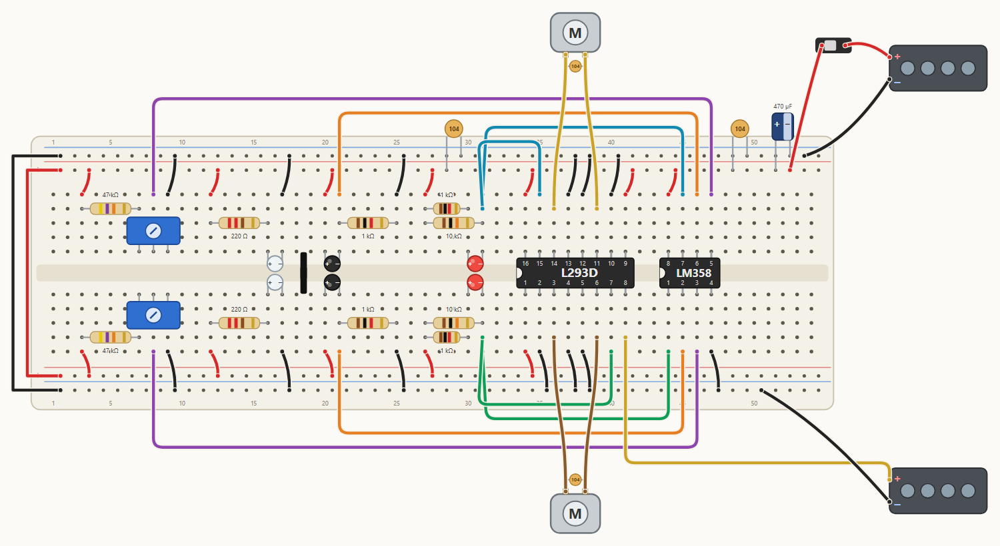